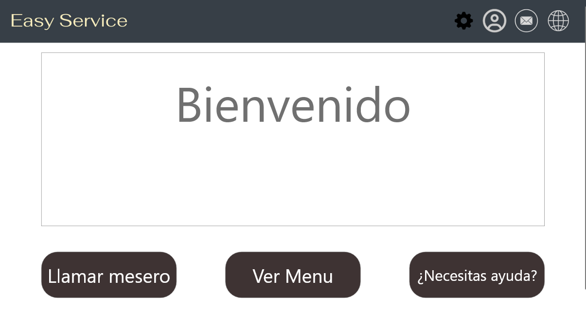
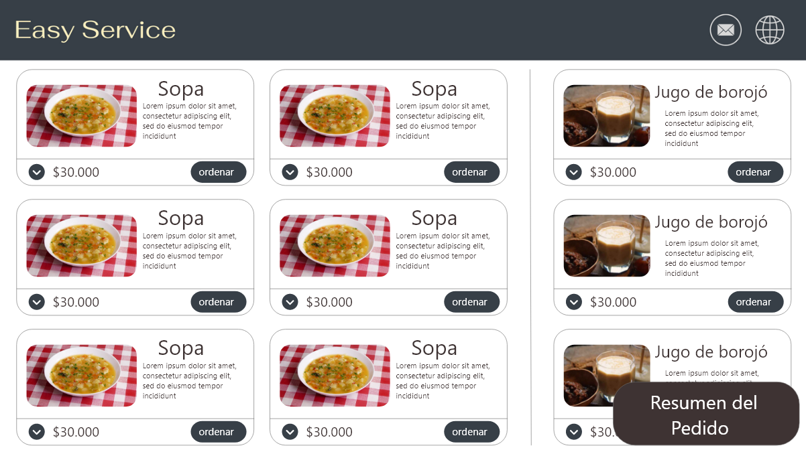
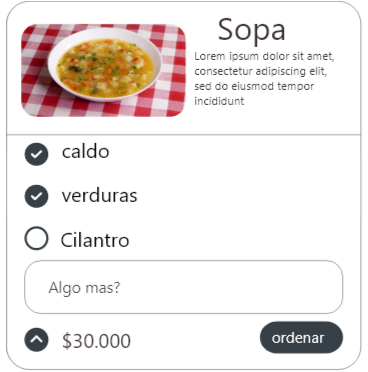
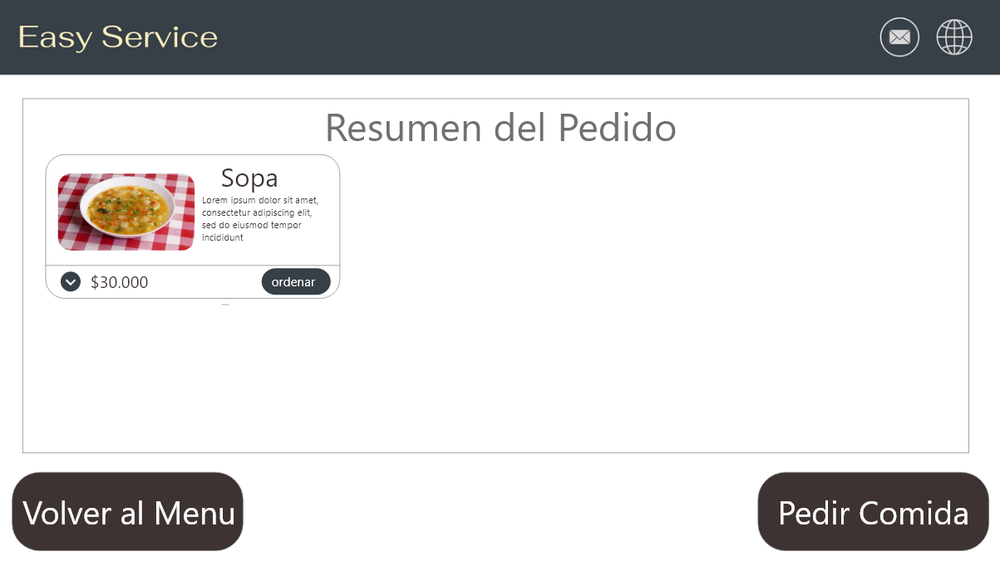
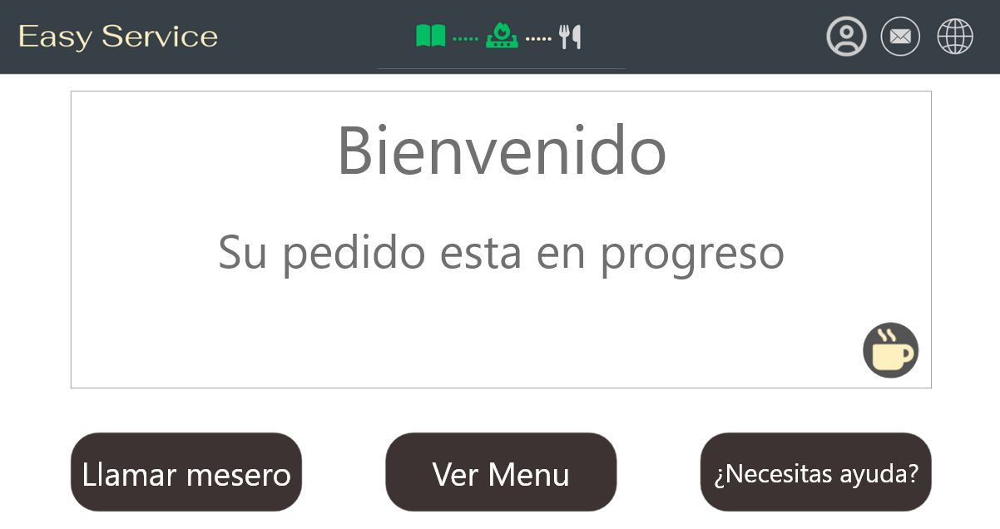
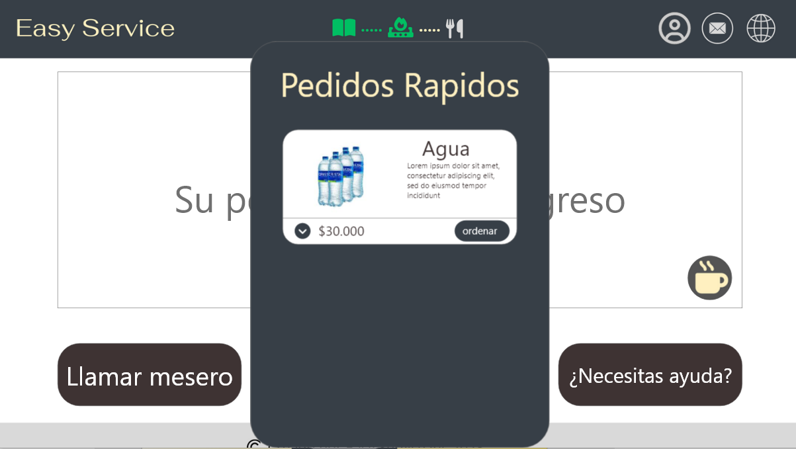

|

Bienvenido señor usuario, aqui le enseñaremos como usar esta aplicacion, comenzemos: Ahora mismo estamos en el inicio, aqui puedes realizar varias cosas, si necesitas asistencia humana oprime el boton de llamar a un mesero el siguiente boton es la tuerca arriba a la derecha, esta te va a llevar a las configuraciones de la pagina, para que puedas modificarla a tu gusto al lado de la tuerca puedes ver un icono de una persona, este es el login para acceder como usuario el boton de menu te llevara al menu, ahi puedes ver los platos disponibles y ordenar tu pedido |

Aqui puedes ver y agregar tus platos favoritos a tu orden si miras en tus platos puedes ver un boton con una flecha hacia abajo, al undirla se abrira una pestaña con mas especificaciones de tu platillo y opciones, como se ve a continuacion: al vovler a undir a la flecha, se cerrara la pestaña si undes el boton de resumen de tu pedido te llevara a tu carrito de compra, donde tienes todos los platillos que agrgaste a tu orden |

En el resumen de tu pedido puedes ver todos los platos que agregaste, aqui puedes modificarlos tambien si miras en tus platos puedes ver un boton con una flecha hacia abajo, al undirla se abrira una pestaña con mas especificaciones de tu platillo y opciones, como se ve a continuacion: si vuelves a undir a la flecha, aparecera lo mismo que aparecia en el menu si undes el boton de pedir comida vas a ordenar lo que tengas en tu carrito de compra, se le notificara de inmediato al chef de tu orden y la va a empezar a preparar de inmediato, tambien te llevara devuelta al inicio, pero con unos cambios |

En este menu tienes todas las opciones anteriores, solamente que con unas adiciones extra primero, arriba en el centro hay una barra que va a indicar el progreso de tu pedido arriba del boton de ayuda hay un nuevo icono, el icono de pedidos rapidos, en el puedes pedir cosas para que te las traigan de inmediato, al undirlo aparecera esto: La felcha va a hacer lo mismo que en las otras veces, y al undir en el boton pedir el pedido se enviara de inmediato y te llegara lo que pediste de en un santiamen |